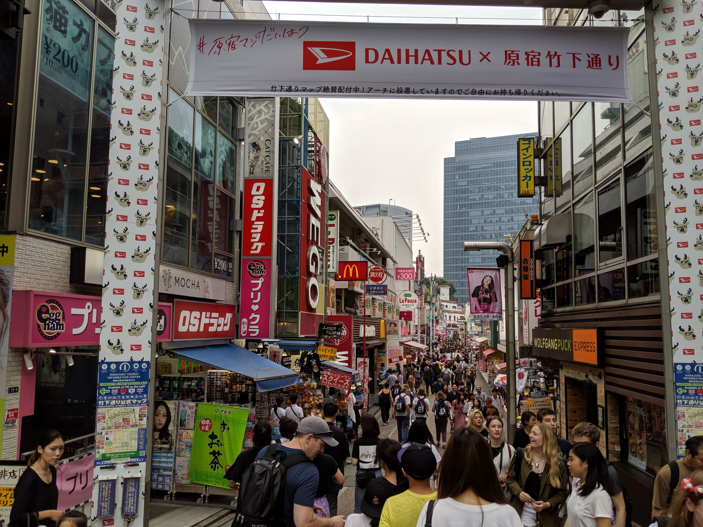
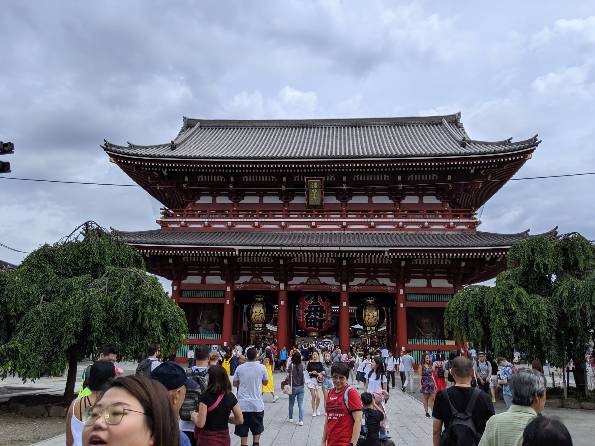
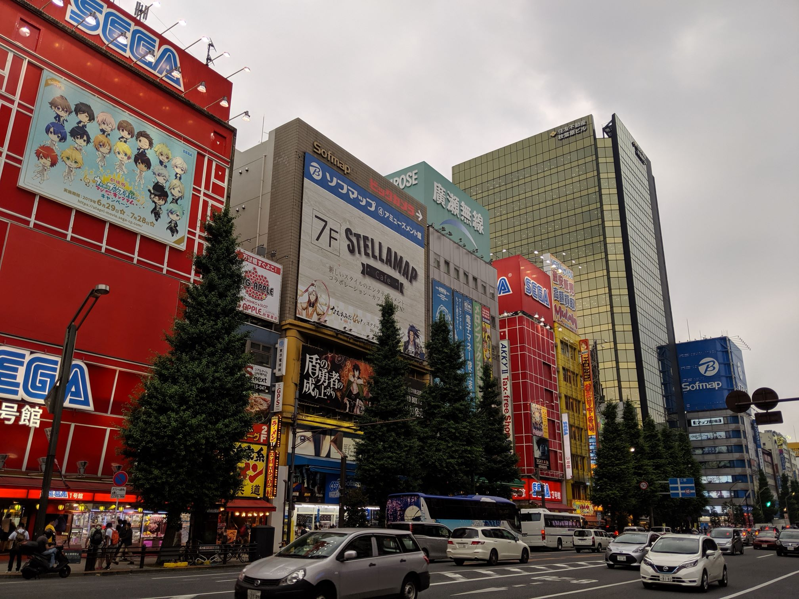
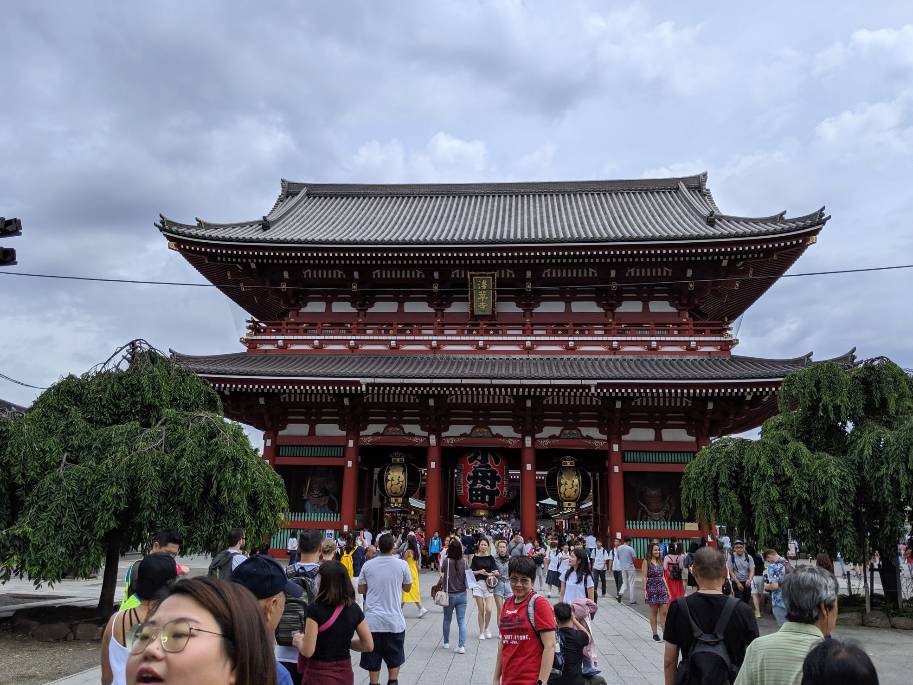
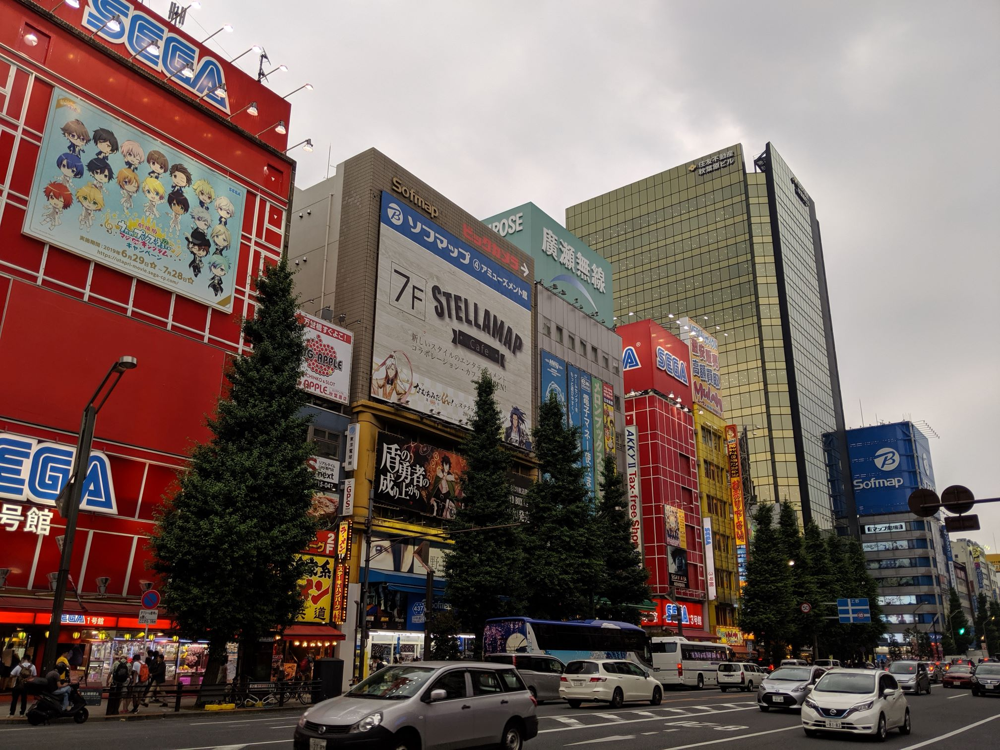

Harajuku


image
Harajuku (原宿) est un sous-quartier faisant partie du quartier de Jingumae, dans l'arrondissement de Shibuya
à Tokyo.
Ce quartier est fréquenté par un grand nombre de jeunes qui profitent du week-end, durant lequel ils n'ont
pas
l'obligation de porter l'habituel uniforme, pour se distinguer par leur style vestimentaire. On y voit
généralement
des adeptes de la mode Lolita, des jeunes gens habillés en chanteur de rock ou en visual kei, et, des
cosplayers
déguisés en personnage de manga, d'anime ou de jeux vidéo. De célèbres groupes de visual kei approvisionnent
leurs
garde-robes à Harajuku, tels que X Japan, Dir en Grey, AnCafe, etc. Ces modes vestimentaires sont ensuite
reprises
par les adolescents.
La rue Takeshita-dōri (voir photo de gauche) concentre un grand nombre de boutiques qui habillent entre
autres les
Gothic Lolita, les Cosplay, les Pink, les Sweet Lolita.
Le quartier de Harajuku est aussi connu pour abriter l'un des plus célèbres sanctuaires shintoïste, le
Meiji-jingū
(voir photo de droite), au milieu du Parc Yoyogi, une forêt artificielle plantée vers 1920. Le Meiji-jingū
(明治神宮) ou
sanctuaire Meiji, est un sanctuaire shintoïste situé en plein cœur de Tokyo, dans l'arrondissement de
Shibuya, en
bordure du quartier Harajuku.
C'est le plus grand lieu de culte shintoïste du pays, où l'on célèbre de nombreux mariages et cérémonies.
Pour plus de détails: https://fr.wikipedia.org/wiki/Harajuku
Obaida

Odaiba (お台場), parfois appelé Daiba, est une grande île artificielle située dans la baie de Tokyo au
Japon. Daiba en
japonais signifie forteresse, en référence aux batteries de canons positionnées sur les îles.
Administrativement,
Odaiba appartient aux arrondissements de Minato et de Kōtō.
Celle-ci possède des hôtels, des commerces, des musées, des bureaux dont ceux de Fuji TV conçus par
Kenzō Tange, une
plage (la baignade n'y est pas recommandée), une grande roue, des sources d'eaux chaudes et des parcs.
C'est aussi à cet endroit qu'on peut voir une statue géante tirée de la populaire série animé Gundam
(voir photo).
La statue RX-0 Unicorn Gundam a commencé sa construction en août 2017 et a été dévoilée le 24 septembre
2017.
Toutes les deux heures, elle présente une transformation automatique du mode Licorne au mode
Destruction, avec la
tête, les épaules, les jupes avant et l'armure des genoux passant d'un mode à l'autre. La statue
comporte des
panneaux LED qui s'allument en rouge ou en vert. La statue Gundam Unicorn mesure 19,7 mètres de hauteur
et pèse 49
tonnes. Pendant la nuit, le mur derrière la Licorne Gundam agit comme un écran de théâtre qui diffuse
des courts
métrages tandis que la statue est décorée avec des jeux d'éclairage spéciaux.
Pour plus de détails: https://fr.wikipedia.org/wiki/Odaiba
Asakusa padding px

Asakusa (浅草) est un quartier populaire de Tokyo de l'arrondissement Taitō, proche d'Ueno, le long de
la rivière
Sumida, accessible par la rue Kappabashi.
Un peu excentré par rapport au reste de la ville (et surtout son centre très vivant et moderne dont
Shinjuku,
Shibuya et Roppongi sont les quartiers les plus représentatifs), Asakusa n'en demeure pas moins un
quartier très
prisé des touristes : on y trouve de nombreux hôtels, dont la plupart sont moins chers qu'ailleurs
en ville, et les
restaurants et petites échoppes artisanales sont nombreux.
Asakusa est connu des touristes pour son temple bouddhiste Sensō-ji (浅草寺), dédié à la déesse
bodhisattva Kannon. Le
temple avec sa pagode à cinq étages, se trouve au bout d'une grande allée commerçante :
Nakamise-dōri. C'est sur ce
site que l'on peut retrouver la porte du tonnerre (voir photo). Le Kaminarimon (雷門, ou porte du
tonnerre) est la
porte extérieure d'un ensemble de deux grandes portes d'entrée qui conduisent finalement au Sensō-ji
(la porte
intérieure étant le Hōzōmon). La porte, avec sa lanterne et ses statues, est populaire auprès des
touristes. Elle
fait 11,7 m de haut, 11,4 m de large et couvre une superficie de 69,3 m.
Pour plus de détails: https://fr.wikipedia.org/wiki/Asakusa
Akihabara

Akihabara (秋葉原) est un quartier de Tokyo situé à cheval sur les arrondissements de Chiyoda et de
Taitō. Il est
célèbre pour ses très nombreuses boutiques d'électronique et pour les mangas qui s'y trouvent.
Il est connu dans le
monde sous le nom de Akihabara Electric Town (秋葉原電気街, Akihabara denki-gai). Le centre de ce
quartier est la gare
d'Akihabara.
Le succès d'Akihabara tient dans le fait que jusqu'à présent, il a réussi à faire cohabiter de
toutes petites
boutiques ultraspécialisées aux côtés des « supermarchés » de l'électronique grand public.
Cependant, depuis
quelques années, les grandes enseignes de l'électronique japonaise (Laox, Sofmap (en), voire
Yodobashi Camera et
Yamada Denki) rachètent les petits magasins en difficulté pour en faire des annexes des leurs.
Dans les petites boutiques situées dans les marchés couverts, ou les ruelles étroites, on peut
trouver tout un tas
de pièces détachées et d'accessoires allant de la guirlande électrique au matériel de
surveillance vidéo, en passant
par toutes sortes de composants électroniques et autres multiprises.
Les grands magasins sont, quant à eux, les rois de l'électroménager dernier cri, de la
téléphonie mobile, des
ordinateurs et des jeux vidéo. Sur les grands axes, on trouve aussi des grands magasins qui
vendent des produits
hors taxes pour les touristes. On peut même y trouver, à bon prix, des produits japonais
destinés au marché
français. Le quartier contient également le bâtiment Akihabara Radio Kaikan, ce dernier est l'un
des monuments les
plus connus du district.
Pour plus de détails: https://fr.wikipedia.org/wiki/Akihabara
Odaiba (お台場), parfois appelé Daiba, est une grande île artificielle située dans la baie de Tokyo au Japon. Daiba en japonais signifie forteresse, en référence aux batteries de canons positionnées sur les îles. Administrativement, Odaiba appartient aux arrondissements de Minato et de Kōtō. Celle-ci possède des hôtels, des commerces, des musées, des bureaux dont ceux de Fuji TV conçus par Kenzō Tange, une plage (la baignade n'y est pas recommandée), une grande roue, des sources d'eaux chaudes et des parcs. C'est aussi à cet endroit qu'on peut voir une statue géante tirée de la populaire série animé Gundam (voir photo). La statue RX-0 Unicorn Gundam a commencé sa construction en août 2017 et a été dévoilée le 24 septembre 2017. Toutes les deux heures, elle présente une transformation automatique du mode Licorne au mode Destruction, avec la tête, les épaules, les jupes avant et l'armure des genoux passant d'un mode à l'autre. La statue comporte des panneaux LED qui s'allument en rouge ou en vert. La statue Gundam Unicorn mesure 19,7 mètres de hauteur et pèse 49 tonnes. Pendant la nuit, le mur derrière la Licorne Gundam agit comme un écran de théâtre qui diffuse des courts métrages tandis que la statue est décorée avec des jeux d'éclairage spéciaux. Pour plus de détails: https://fr.wikipedia.org/wiki/Odaiba
Asakusa padding px

Asakusa (浅草) est un quartier populaire de Tokyo de l'arrondissement Taitō, proche d'Ueno, le long de
la rivière
Sumida, accessible par la rue Kappabashi.
Un peu excentré par rapport au reste de la ville (et surtout son centre très vivant et moderne dont
Shinjuku,
Shibuya et Roppongi sont les quartiers les plus représentatifs), Asakusa n'en demeure pas moins un
quartier très
prisé des touristes : on y trouve de nombreux hôtels, dont la plupart sont moins chers qu'ailleurs
en ville, et les
restaurants et petites échoppes artisanales sont nombreux.
Asakusa est connu des touristes pour son temple bouddhiste Sensō-ji (浅草寺), dédié à la déesse
bodhisattva Kannon. Le
temple avec sa pagode à cinq étages, se trouve au bout d'une grande allée commerçante :
Nakamise-dōri. C'est sur ce
site que l'on peut retrouver la porte du tonnerre (voir photo). Le Kaminarimon (雷門, ou porte du
tonnerre) est la
porte extérieure d'un ensemble de deux grandes portes d'entrée qui conduisent finalement au Sensō-ji
(la porte
intérieure étant le Hōzōmon). La porte, avec sa lanterne et ses statues, est populaire auprès des
touristes. Elle
fait 11,7 m de haut, 11,4 m de large et couvre une superficie de 69,3 m.
Pour plus de détails: https://fr.wikipedia.org/wiki/Asakusa
Akihabara

Akihabara (秋葉原) est un quartier de Tokyo situé à cheval sur les arrondissements de Chiyoda et de
Taitō. Il est
célèbre pour ses très nombreuses boutiques d'électronique et pour les mangas qui s'y trouvent.
Il est connu dans le
monde sous le nom de Akihabara Electric Town (秋葉原電気街, Akihabara denki-gai). Le centre de ce
quartier est la gare
d'Akihabara.
Le succès d'Akihabara tient dans le fait que jusqu'à présent, il a réussi à faire cohabiter de
toutes petites
boutiques ultraspécialisées aux côtés des « supermarchés » de l'électronique grand public.
Cependant, depuis
quelques années, les grandes enseignes de l'électronique japonaise (Laox, Sofmap (en), voire
Yodobashi Camera et
Yamada Denki) rachètent les petits magasins en difficulté pour en faire des annexes des leurs.
Dans les petites boutiques situées dans les marchés couverts, ou les ruelles étroites, on peut
trouver tout un tas
de pièces détachées et d'accessoires allant de la guirlande électrique au matériel de
surveillance vidéo, en passant
par toutes sortes de composants électroniques et autres multiprises.
Les grands magasins sont, quant à eux, les rois de l'électroménager dernier cri, de la
téléphonie mobile, des
ordinateurs et des jeux vidéo. Sur les grands axes, on trouve aussi des grands magasins qui
vendent des produits
hors taxes pour les touristes. On peut même y trouver, à bon prix, des produits japonais
destinés au marché
français. Le quartier contient également le bâtiment Akihabara Radio Kaikan, ce dernier est l'un
des monuments les
plus connus du district.
Pour plus de détails: https://fr.wikipedia.org/wiki/Akihabara
Akihabara (秋葉原) est un quartier de Tokyo situé à cheval sur les arrondissements de Chiyoda et de Taitō. Il est célèbre pour ses très nombreuses boutiques d'électronique et pour les mangas qui s'y trouvent. Il est connu dans le monde sous le nom de Akihabara Electric Town (秋葉原電気街, Akihabara denki-gai). Le centre de ce quartier est la gare d'Akihabara. Le succès d'Akihabara tient dans le fait que jusqu'à présent, il a réussi à faire cohabiter de toutes petites boutiques ultraspécialisées aux côtés des « supermarchés » de l'électronique grand public. Cependant, depuis quelques années, les grandes enseignes de l'électronique japonaise (Laox, Sofmap (en), voire Yodobashi Camera et Yamada Denki) rachètent les petits magasins en difficulté pour en faire des annexes des leurs. Dans les petites boutiques situées dans les marchés couverts, ou les ruelles étroites, on peut trouver tout un tas de pièces détachées et d'accessoires allant de la guirlande électrique au matériel de surveillance vidéo, en passant par toutes sortes de composants électroniques et autres multiprises. Les grands magasins sont, quant à eux, les rois de l'électroménager dernier cri, de la téléphonie mobile, des ordinateurs et des jeux vidéo. Sur les grands axes, on trouve aussi des grands magasins qui vendent des produits hors taxes pour les touristes. On peut même y trouver, à bon prix, des produits japonais destinés au marché français. Le quartier contient également le bâtiment Akihabara Radio Kaikan, ce dernier est l'un des monuments les plus connus du district. Pour plus de détails: https://fr.wikipedia.org/wiki/Akihabara